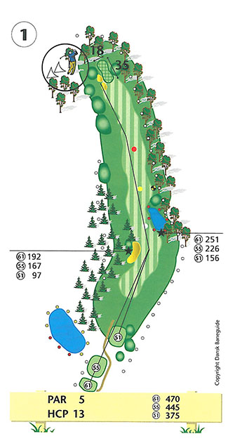
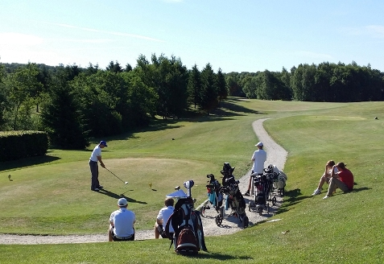

<div class="pages">
  <div data-page="hul1" class="page navbar-fixed toolbar-fixed" >
    <div class="navbar">
      <div class="navbar-inner">
        <div class="left">
          <a href="#" class="link back icon-only"><i class="icon icon-back"></i></a>
          <!-- <a href="#" class="back link icon-only"><i class="icon icon-back"></i></a> -->
        </div>
        <div class="center">Hul 1</div>
        <!-- <div class="right"></div> -->
        <div class="right">
        </div>
      </div>
    </div>
    <div class="page-content" style="padding-top:45px;">
       <div class="content-block">
          <center></center>
          <p>Relativt kort par 5 hul, hvor du har en god mulighed for at starte din runde med en god score.</p>
          <center></center>
          <p>Afhængig af vindretning- og styrke er valget af kølle vigtigt for udslaget. Du bør forsøge at komme så langt frem i dog-legget som muligt, dog uden at nå søen og den omkransende bevoksning. Pas også på bunkeren i venstre side på bakken. Hele højresiden af 1. hul er out of bounds og pas på de to bunkere til venstre for green.</p>
          <p>Green skråner en del fra bagkant mod forkant og tager derfor ganske godt imod selv længere indspil. Om muligt bør du placere dit indspil kort af pinden, hvilket vil give dig det nemmeste put.</p>
          <p>For lav-handicapperen eksisterer muligheden for at tage dog-legget ud af spil, men kræver et drive med mindst 225 meter carry over grantræerne. Til gengæld belønnes spilleren ved kun at have ca. 175 meter til green og dermed en god chance for at starte runden med en birdie eller bedre.</p>
          <p>Hulsponsor: <br />
          <center></center><br />
          Bænksponsor:<br />
          - Ingen bænk -
          </p>
        </div>
    </div>
    </div>
    </div>
  </div>
</div>
